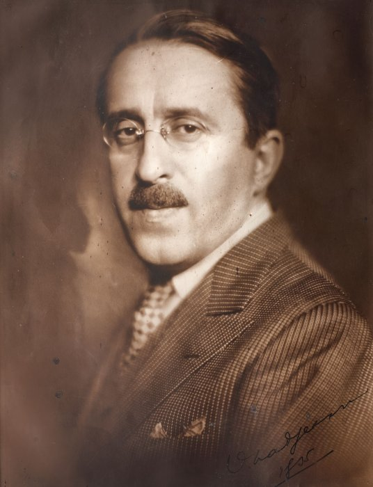

Biografie
Virgil Traian N. Madgearu s-a născut pe 14 decembrie 1887 la Galați. A fost economist, sociolog și politician de stânga. A absolvit studiile universitare economice la Leipzig și și-a desăvârșit studiile economice la Londra.
Madgearu a fost un exponent al curentului economic țărănist, având un impact semnificativ asupra dezvoltării economice a României interbelice.
El a fost printre primii care au abordat problema agrară din perspectiva economică, punând accent pe nevoia de modernizare a agriculturii românești.
A fost economistul consacrat al unei perioade istorice în care în plan politic s-a realizat o afirmare a "țărănismului" cu principalul său om politic Ion Mihalache, perioada în care s- au estompat, dar nu s-au putut anihila efectele procesului de diferențiere din lumea rurală.